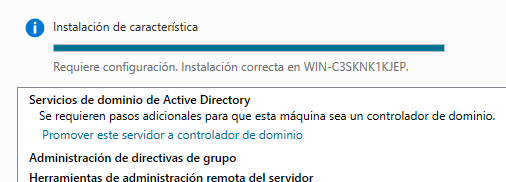
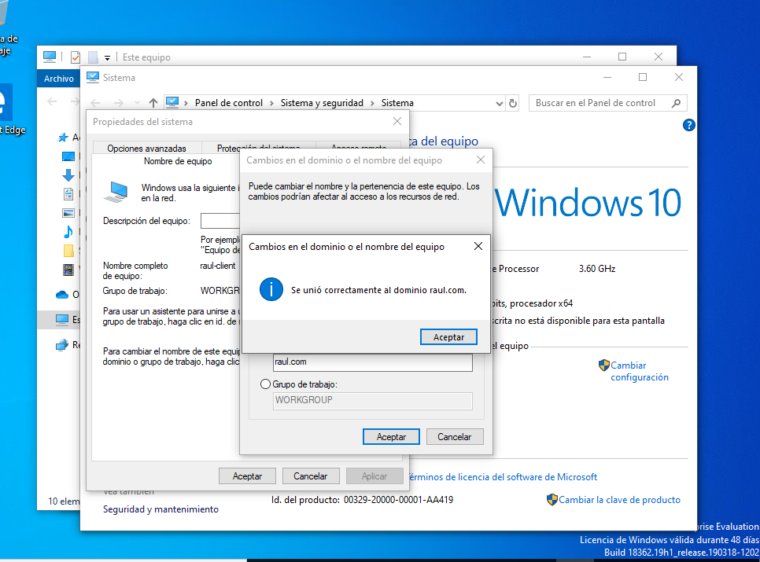

Gestió de Dominis i Accessos en Windows
Primer de tot comencem aquest sprint amb la instal·lació de Windows Server 2022 amb interfície gràfica a partir de la ISO. Una vegada tenim la instal·lació, el que em de fer es configurar per a que la IP sigui estatica, llavors ens anem a VirtualBox a Xarxa i fiquem Xarxa NAT:

1. Instal·lació Domini AD
Una vegada iniciem la maquina virtual amb el servidor ens preguntara si volem que el nostre servidor pugui reconeixer altres dispositius de la xarxa, l'hi donem a SI

En aquest punt començem amb l'instal·lació del Domini. Quan em iniciat ja ens surt l'Administrador del servidor, però en el cas que no surti anem al Inici de Windows i el busquem i iniciem com administrador.

1.1 Rols del servidor
Dints de l'Adminstrador del servidor donem en Agregar roles y características, i l'hi donem a siguiente:

I en la següent finestra que ens surt deixem la opció per defecte ja que estem fent la instal·lació de rols i caracteristiques, després l'hi donem a següent:
De nou en la nova finestra deixem els valors per defecte ja que només ens sortira la opció del nostre servidor actual que tenim operatiu. I després fem següent:

A la següent finestra haurem de triar els serveis que volem instal·lar. Activarem la casella de Servicios de dominio de Active Directory.

L'hi donem a Agregar característica
I comprovem que tenim marcada la casella de Servicios de dominio de Active Directory.
Una vegada tenim els rols releccionats donem siguinte i anem al apartar de Características
1.2 Caracteristiques
Comprovem que tenim instal·lat la caracteristica de Administración de directivas de grupo, que ve per defecte, però en cas de no tenirlo l'hi donem per instal·lar-lo.Seguidament donem a Siguiente:
Ens sortira una finestra informativa i llavors després de llegir-la l'hi donem a Siguiente:

1.3 Confirmacions
En la finestra de confirmació em de donar clic al apartat de Reiniciar automaticamente el sercidor en caso necesario, i següidament ens sortira una missatge informant que es pot reinciar sense notificació, llavors nome a SI.
I podem veure el següent:

1.4 Finalitzar instl·lació
Finalment l'hi donem a instal·lar i podrem veure una barra amb el progres i els resultats:
Seguidament quan termini ens sortira una notificació i harem de fer clic on fica Promover este servidor a controlador de dominio

1.5 Configuració de implementació
En aquest punt em de triar el tipus d’instal·lació d’Active Directory, en aquest escogirem Agregar un nuevo bosque ja que es el nostre primer servidor AD. Escribim el nom del domini, que l'hi posarem el següent:
Passem a la següent finestra.
1.6 Opcions del controlador de domini
Deixem totes les opcións que ens surten, i al final introduïrem una contrasenya segura per a la restauració del serveis:
Quand donem següent anirem a la finestra de Opcions de DNS, passem aquestra finestra i en Opcions adicionals tampoc cal tocar res.
1.7 Revisar i Instal·lar
Ens anem directe a revisar les opcions que em seleccionat i configurat anteriorment:

Finalment en el ultim apartat es fa una evaluació de les opcións i quan acabi l'hi donem a instal·lar:
Després de la instal·lació es reiniciara, i ja iniciarem amb el nom:

2. Unir equips al domini
Una vegada tenim tot a punt, unirem l'equip al domini.
2.1 Configuració Server
Llavors el que em de fer es en el servidor anar i desactivar el Fireware de totes les xarxes que surten, que en aquest punt ja em surten les 3. Desactivem Fireware:
Mirem la IP del nostre Server per poder unir l'equip posteriorment. Em de recordar l'IP i l'enllaç.
En aquest cas:
- IPv4 -> 10.0.2.14
- Enllaç -> 10.0.2.1

Configurem la IP fixa anant a Panel de control, en Redes e Internet i en la nostra conexió anem a propietats. En IPv4 donem a Propiedades:

Introduim els valors de IPv4, mascara i enllaç de la següent manera:
2.2 Configuració Client
Anem al Client que en aquest cas sera un Windows 10 i igual que al Sever desactivem el Fireware de totes les xarxes, ja que evitem problemes per aquestos casos de prova:
Tornem a les nostres Conexions de Xarxa i en les propietats del DNS introduïm la IP que teniem del Servidor que en aques cas era 10.0.2.14

2.3 Validar usuari
En aquest punt anema al Servidor i podem veure que ens surt el nostre domini si anem a Herramientas i Usuarios y equipos de AD:
Creem una nova UO donant boto dret al domini raul.com. Aqusta UO tindra el nom de alumnes:
Seguidament donarem boto dret en la UO creada i donarem a crear un nou Usuari que ens servira per poder validarnos en el domini. Aques nou usuari tindra com a nom alumne1 amb la seva contrasenya.
Podem veure el resum de la creació de l'usuari:
Visualització de l'usuari creat a dints la UO:

Ara anema al Client i en les propietats del sistema anema a cambiar el domini d'aquest equip (Panel de Control -> Sistema y seguridad -> Sistema).
Introduim el domini que en aques cas es raul.com i ens demanara l'usuari que volem unir i la seva contrasenya, la introduïm:
Dades de l'usuari que volem unir:
Usuari unir correctament. Tocara reinciar el client, en cas de que no es faci automaticament:

Si anem al Servidor ja podem veure com el client raul-client esta unit al domini:
En el moment de que el Client s'inicie entrarem amb l'usuari alumne1 amb les seves dades:
I Ja s'iniciara el seu sistema i finalment podem veure com alumne1 estara dints del seu sistema que esta en aquest domini al qual l'hem afegit:

3. Gestió del Domini AD
mirar mmet explicació exercicis i fer els exercicis que teniu d'usuaris i grups, documentar-ho tot. No oblideu proves.